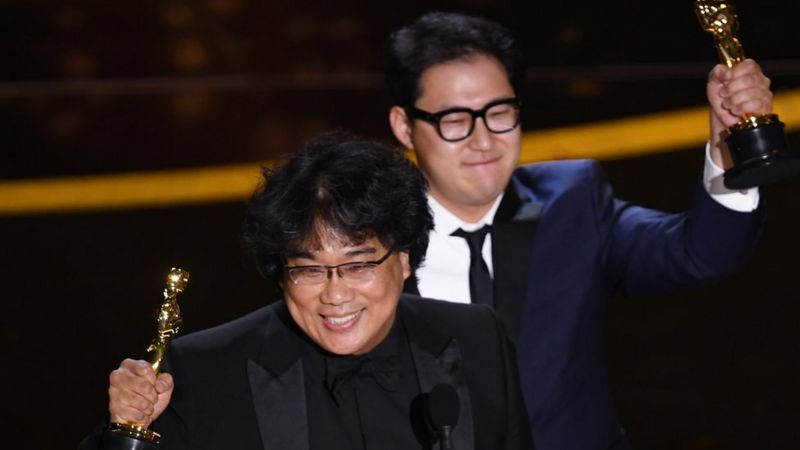

기생충: 아카데미 4관왕, 영화 역사를 새로 쓰다
02/10 2020

영화 '기생충'이 미국 아카데미상 4개 부문을 수상하며 영화사를 새로 썼다.
10일 미국 로스앤젤레스에서 열린 미국 아카데미 시상식에서 '기생충'은 작품·감독·국제영화·각본의 네 개 부문에서 상을 받았다. 한국 영화 역사상 아카데미상을 받은 것은 '기생충'이 최초이며 영어가 아닌 언어로 나온 영화가 작품상을 받은 것도 아카데미 역사상 최초다. '기생충'은 각본상, 작품상, 감독상, 편집상, 미술상, 국제영화상(외국어영화상)의 6개 부문 후보에 올랐다.
'기생충'이 새로 쓴 역사
한국 영화 101년 역사상 아카데미상을 받은 것은 '기생충'이 처음이다. 92년 역사의 미국 아카데미 시상식에서 영어가 아닌 언어로 된 영화가 작품상을 받은 것도 이번이 최초. 한 영화가 칸영화제 황금종려상과 아카데미 작품상을 동시에 수상한 것은 델버트 맨 감독의 '마티' (1955년작) 이후 역대 두 번째이자 64년 만이다. 아시아계 감독이 아카데미 감독상을 받은 것은 대만 출신의 리안 감독이 '브로크백 마운틴'과 '라이프 오브 파이'로 두 번 감독상을 받은 이후 처음이다.
수상 소감은?
영화의 감독 봉준호는 작품상과 감독상까지는 내심 기대하지 않았던 듯하다. 봉 감독은 각본상과 국제영화상을 받고 감독상까지 받게 되자 무대에 올라 "좀 전에 국제영화상을 받고 오늘 할 일은 끝났다고 생각하고 있었는데..."라고 운을 뗐다. "깨어나면 이게 꿈일 것만 같고... 약간 모든 게 초현실적인..." 봉 감독은 작품상 수상 직후 아카데미 측에 이렇게 말했다. 그는 감독상을 수상한 후 다른 경쟁작 감독들에게 찬사를 돌렸다. "제가 마티 (마틴 스코세이지) 영화를 보면서 공부했던 사람인데 같이 후보에 오른 것만으로도 영광입니다. 제 영화를 아직 미국 관객이 모를 때부터 항상 제 영화를 리스트에 뽑고 좋아하셨던 '퀜틴 형님(쿠엔틴 타란티노)'도 계신데 너무 사랑하고 감사합니다. 같이 후보에 오른 토드(토드 필립스, '조커')나 샘(샘 멘데스, '1917') 모두 제가 존경하고 사랑하는 감독님들인데... 오스카에서 허락한다면 이 트로피를 '텍사스 전기톱'으로 5등분해 나누고 싶습니다."
감독상을 함께 수상한 한진원 작가는 수상 소감에서 한국의 영화 산업에 종사하는 이들에게 영광을 돌렸다. "미국에는 할리우드가 있듯이 한국에는 충무로가 있습니다. 제 심장인 충무로의 모든 필름메이커와 스토리텔러와 함께 이 영광을 나누고 싶습니다." 한 작가는 말했다.
수상에 대한 사람들의 반응은?
한국 영화사상 최초의 아카데미상 수상 소식에 온라인의 반응도 뜨겁다. 특히 봉준호 감독의 인상적인 수상 소감에 대해 많은 사람들이 찬사를 보내고 있다. 시상식장에서 많은 이들의 관심을 끈 것은 '기생충'의 각본상 수상에 누구보다도 기쁘게 환호하는 배우 샌드라 오의 모습이었다. 샌드라 오는 한국계 캐나다 배우로 종종 한국에 대한 애정을 표현하곤 했다. 어떤 이들은 봉준호 감독이 인터뷰에서 '아카데미도 로컬 영화제 아니냐'고 익살스럽게 말했던 것을 떠올리기도 했다. 해리 해리스 주한 미국 대사는 영화에서 등장하는 음식 '짜파구리'를 보여주면서 재치있게 축하를 건냈다.
BBC NEWS 코리아